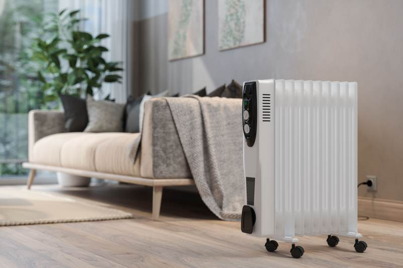
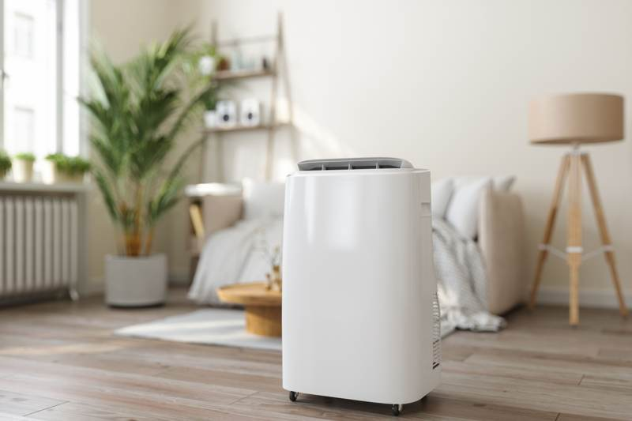
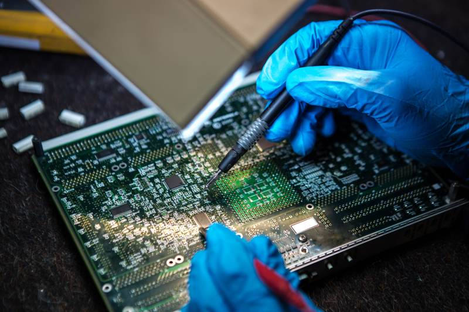

As the seasons change in Edmonton, it's crucial to ensure that your devices are well-prepared to handle the varying weather conditions. From the harsh cold of winter to the warm days of summer, keeping your electronics in top shape can prevent unexpected malfunctions and extend their lifespan. Here are some essential maintenance tips to help you safeguard your gadgets throughout the year.
Understanding Edmonton’s Climate Impact on Electronics
Edmonton's climate is characterized by cold winters and warm summers, which can be tough on electronic devices. The fluctuating temperatures and humidity levels can lead to condensation, increasing the risk of internal damage. Understanding these challenges is the first step in preparing your devices for seasonal changes.
Cold weather, in particular, can affect battery performance and screen functionality. Devices left in freezing temperatures may experience reduced battery life and sluggish operation. Conversely, the heat of summer can lead to overheating, causing potential damage to internal components.
Winter Maintenance Tips
As winter approaches, focus on protecting your devices from the cold. Here are some strategies to consider:
- Keep Devices Warm: Avoid leaving electronics in cold vehicles or unheated areas. If you must take them outside, keep them in insulated bags.
- Monitor Battery Health: Cold temperatures can drain batteries quickly. Regularly check battery health and recharge before heading out.
- Use Protective Cases: Invest in sturdy cases that offer insulation against the cold and protection from potential falls on icy surfaces.

Preparing for Spring and Summer
The warmer months bring their own set of challenges for electronic devices. To keep them functioning optimally, consider these tips:
- Avoid Direct Sunlight: Prolonged exposure to sunlight can overheat devices. Use screen protectors with anti-glare properties if you need to use them outdoors.
- Check for Dust and Debris: Spring is a great time to clean out any accumulated dust from vents and ports to prevent overheating.
- Regular Software Updates: Ensure all devices are up-to-date with software updates that may include important performance improvements and bug fixes.

Tackling Humidity and Moisture
Humidity can pose a significant threat to electronic devices by facilitating corrosion and short circuits. To mitigate this risk, keep devices in dry environments and use silica gel packs to absorb excess moisture in storage areas.
If a device does become wet, power it off immediately and remove any detachable parts. Allow it to dry thoroughly before attempting to turn it back on. This step is critical to prevent permanent damage.
Year-Round Best Practices
No matter the season, some best practices remain constant. Always use surge protectors to guard against power surges, especially during thunderstorms. Regularly back up important data to prevent loss due to unforeseen device failures.
By staying proactive with device maintenance, you can enjoy peace of mind knowing your electronics are equipped to handle Edmonton's dynamic climate. Regular checks and simple precautions can go a long way in ensuring their longevity and performance.
